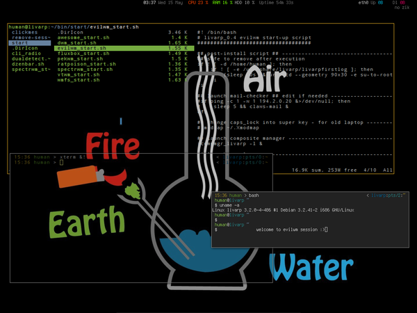

lang fr|gb

the evilwm session
evil is the minimal floating window-manager par excellence! no panel, no menu, no window decorations except for a 1px border, no shortcuts except for a terminal with [Ctrl+Alt+Return] keybind, nothing to disrupt the work ... as they said in the main page: "'Minimalist' here doesn't mean it's too bare to be usable - it just means it omits a lot of the stuff that make other window managers unusable."
{kind=link}
startup
evilwm is launched from the ~/bin/start.evil_start.sh script.
to modify startup applications, simply edit this file:
components
minimal evilwm session includes:
- fbpanel: with a menu and the systray. available from top-left corner.
- conky: in-line config to stay out-of-your-work, editable from its configuration file ~/.conky/conkyrc_evil
vim .conky/conkyrc_evil or from the evilwm menu:section config:evil:conky
configuration
evil accepts a configuration file (optionnal, livarp doesn't use it) but works with options passed as arguments:
how livarp launches evilwm
while true; do
evilwm -snap 10 -term urxvtcd -nosoliddrag 2> ~/.evilwm.log
done
meaning: launch evilwm in a loop with errors passed to a log file, terminal by default is urxvtc, snap distance=10px, and no solid drag window to preserve resources.
evilwm options
- -display string : specifies the X display to run on
- -term terminal_name : specifies an alternative program to run when spawning a new terminal
- -fn fontname : specify a font to use when resizing or displaying window titles.
- -fg #RRGGBB : frame colour of currently active window.
- -fc #RRGGBB : frame colour of active fixed windows.
- -bg #RRGGBB : frame colour of inactive windows.
- -bw n_in_pixel : width of window borders in pixels.
- -snap n_in_pixel- : enable snap-to-border support. num gives the proximity in pixels to snap to.
- -mask1 modifiers* : [Ctrl][Alt] by default
- -mask2 modifiers* : [Alt] by default
- -altmask modifier* : [Shift] by default
- -app name/class : match an application by instance name and class (for help in finding these, use the xprop tool to extract the WM_CLASS property). Subsequent -geometry, -dock, -vdesk and -fixed options will apply to this match.
- -g geometry : apply a geometry (using a standard X geometry string) to applications matching the last -app.
- -v vdesk : specify a default virtual desktop for applications matching the last -app.
- -f : specify that application is to start with a fixed client window (-s is also accepted to be compatible with previous versions).
- -nosoliddrag : draw a window outline while moving or resizing.
- -V : evilwm version
utilisation
evilwm is very simple:
- follow focus: focus follow pointer
- raise on clic: click to raise windows
- floating wm: window are displayed free, or you have to specify properties with the -app options (see options section)
evilwm is fully driven by keyboard:
modifier key/button fouctions
[Alt] clic gauche Move window raise window
clic central resize window
clic droit lower window
[Tab] cycle through windows on screen.
[Ctrl][Alt] return Spawn new xterm
i Show information about current window
= Maximise current window vertically (toggle).
x Maximise current window (toggle).
d Toggle visible state of docks (e.g., pagers and launch bars).
f Fix or unfix current window.
1-8 Switch virtual desktop.
left,right Previous/Next virtual desktop.
a va/revient au/du précédent bureau
s switch/permute les écrans
escape Delete current window
insert Lower current window
h,j,k,l Move window left, down, up or right (16 pixels).
Holding Shift resizes the window instead
y,u,b,n Move window to top-left, top-right, bottom-left or bottom-right of screen.